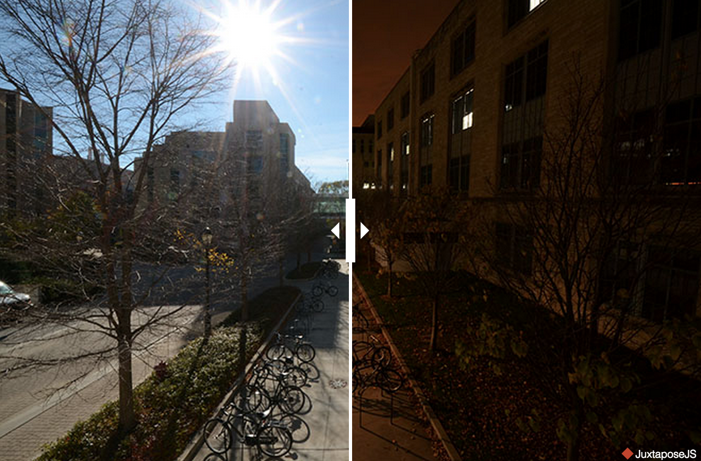

Photography
Below are photos I have taken for North by Northwestern and Spokesman, as well as in my free time. I have also worked as a photographer for Arlington Heights Park District. While most of the photos I have taken will be used for the park district's advertising and program guide, some photos were posted online. Check out photos of Arlington Heights' Farmers Market and the Arlington Amateur Golf Tournament.
The view from up there
As Photo Editor of North by Northwestern, I organized, led and contributed to this section project, featuring the views from the tops of various buildings at Northwestern. This was published in Fall 2014 and uses JuxtaposeJS and MapBox.
Campus Activism at NU
As Photo Editor of North by Northwestern, I organized, led and contributed to this section project, featuring various campus activists at Northwestern and why they fight for the cause they fight for. This was published in Winter 2015 and had positive reception from various social justice and activism groups at Northwestern.